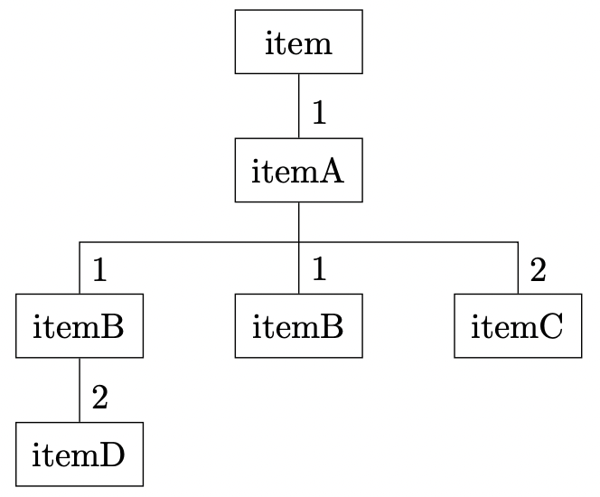

Production functions
The functions input file is a Python script in which the user defines all of the functions used in the process input file. The functions must be defined in the global scope and can be classified as follows
Note
The following subsections describe only the structure and functionality. The use of these functions is presented in chapter 3 (Examples).
Process function
All process functions referenced in the orders under the ‘function’ attribute must be defined in the function input file. The process functions are used to represent machining or assembly operations, and each of these functions has four arguments: env, item, machine, and factory. The following paragraphs explain what these arguments are used for:
env
The argument env points to the reference of the simulation environment of the simulation kernel. This reference can be used to access the current simulation time via the attribute now to make the behavior of the process function dependent on the simulation time.
current_sim_time: float = env.now
In addition, this reference is used to set the current process to the active without control state. For this purpose, a simpy.Timeout event is yielded through env. The duration of the release of control is controlled by a time interval passed in the process. The machine is blocked for this time such that, for example, maintenance or processing times can be mapped.
# Using a random delay
delay: float = normalvariate(10, 0.2)
# Delays must be positive
yield env.timeout(abs(delay))
Note
Any number of timeout events can be yielded in a process function, whereas returns are only used to manage the control flow if necessary.
item
Through the argument item, all references to workpieces involved in the process can be accessed. The following table displays which information is available.
Read |
Write |
Access |
|
|---|---|---|---|
attributes |
+ |
+ |
item.attr_1 (e.g.) |
id |
+ |
- |
item.item_id |
name |
+ |
- |
item.name |
reject |
+ |
+ |
item.reject |
The following figure illustrates what the item access structures look like when the workpieces are nested or the demand of the process is greater than one.
{kind=link}
The item attribute always references the main workpiece of a process – itemA in this case. The figure shows that two workpieces of type itemC were assembled into itemA. Whenever the quantity is greater than one, the references are stored in lists. The access to an attribute (e.g., attr_1) of the first of the two itemC items looks as follows:
item.itemC[0].attr_1
If two (or more) workpieces of the same type were assembled in different assembly steps (see itemB), then access would be made in a special way. Starting from the second workpiece, the references are supplemented by the prefix ‘_’ and a continuing suffix. Thus, identical workpieces from different process steps can be differentiated. Assuming the middle itemB was mounted second, access from its attributes (e.g., attr_2) would be as follows
# accessing, the first assembled itemB
item.itemB.attr_2
# accessing, the second assembled itemB
item._itemB2.attr_2
This structure can be nested as far as required. Thus, access to attributes (e.g., attr_3) of itemD is through itemB:
item.itemB.itemD.attr_3
machine
The machine argument can be used to reference the attributes of the machine on which the machining takes place. In addition, each machine of a station has its own number.
Read |
Write |
Access |
|
|---|---|---|---|
attributes |
+ |
+ |
machine.attr_1 (e.g.) |
machine nr |
+ |
- |
machine.nr |
name |
+ |
- |
machine.name |
Since there are no nested structures as with the items, access is always via machine.attr_name.
factory
All global attributes can be reached through the factory reference. These can also be assigned new values from process functions.
factory.global_attr
However, the behavior of the global attributes is not so controllable since, particularly with stochastic processes, how often or when a process function is called is not known. Therefore, the global attributes should only be set based on global functions.
Source and Sink
Each job has exactly one source and one sink. Their tasks are to create workpieces in the production process and to remove them after they have passed through the process. By matching the behavior of the source and sink, a push or pull material flow can be configured in the production system.
A source or sink is defined as a function in the global scope in the function input file and must match the values of the sink and source attributes of the orders. Such a function has exactly two arguments: env and factory. As described for the processes, through these arguments the user can access the current simulation time and generate timeout events, and access to global attributes is provided.
The following figure illustrates the logic of the source and sink functions. These functions can yield any number of objects of type int or simpy.Timeout. As soon as an int value is yielded, the iteration over the source or sink (generator) is aborted, and the yielded value corresponds to the number of workpieces that the source/sink generates/removes. If no int value is yielded, then the iteration stops after the last yield and starts again.

If no sink is defined, then the default sink removes all workpieces from the corresponding end storage without any time delay (if no assembly workpieces are taken from this store for another order). If workpieces are always to be ready for production, an infinite source can be defined. For this purpose, the storage of the corresponding buffer memory must be and an int value from the source must be yielded as the first value. Thus, the source always fills up the storage without a time offset and stops when it is full.
# Define an infinite source
def infinite_source(env, factory):
yield 1
Example 03 gives a concrete example of the interaction of an infinite source and sink with a demand curve over time.
Global function
Global functions are specified via the functions attribute of the factory object and defined in the global scope of the function input file. The task of the global functions is to control the behavior of the global attributes. Global functions get two arguments: env and factory. Through env, as already shown with the process functions, timeout events can be generated and the simulation time can be queried, while factory is used to obtain access to the global attributes to assign new values to them depending on the time. The following figure presents the required structure of a global function schematically:

First, the global attributes are assigned updated values; arbitrarily nested structures can be used. Subsequently, at least one timeout event must be yielded. This is because the global functions are executed parallel to the simulation in an infinite loop; without a timeout event, the simulated time would not progress.
Example 02 demonstrates how to assign a time profile to global variables. Example 03 illustrates how global functions can be used to influence the behavior of the production system.
Distribution
The user-defined distributions that can be assigned to the attributes of the simulation objects are also defined in the global scope of the function input file. For content reasons, the structure of these functions is introduced together with the attribute distributions.